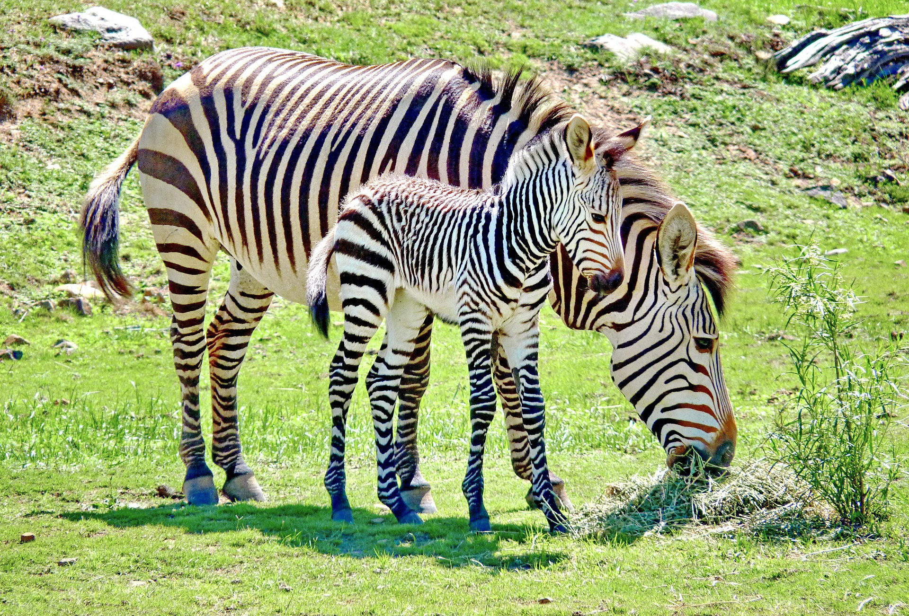
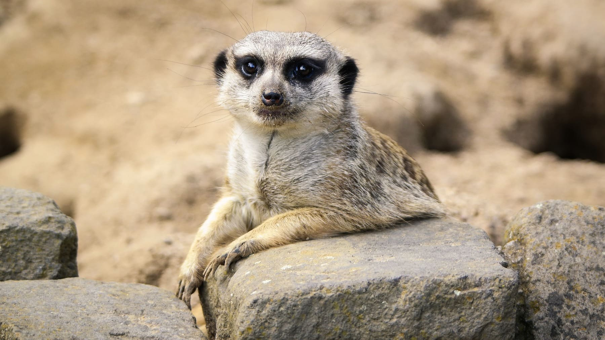

Zona de Sabana Africana
En esta zona podras conocer una variedad de animales de la sabana entre ellos los que se muestran a continuacion
Leones

Los leones son grandes felinos originarios de la sabana africana. Viven en manadas y se caracterizan por su poderoso rugido y la melena de los machos. Son depredadores tope y juegan un papel clave en el equilibrio del ecosistema.
Cebras
Las cebras son herbívoros conocidos por su distintivo pelaje a rayas blancas y negras. Viven en grupos y utilizan su velocidad y coordinación para protegerse de los depredadores. Cada cebra tiene un patrón de rayas único, como una huella digital.
suricatas
Las suricatas son pequeños mamíferos que habitan en el sur de África. Viven en colonias organizadas y se destacan por su costumbre de ponerse de pie para vigilar a los depredadores. Son animales sociales, curiosos y excelentes excavadores.